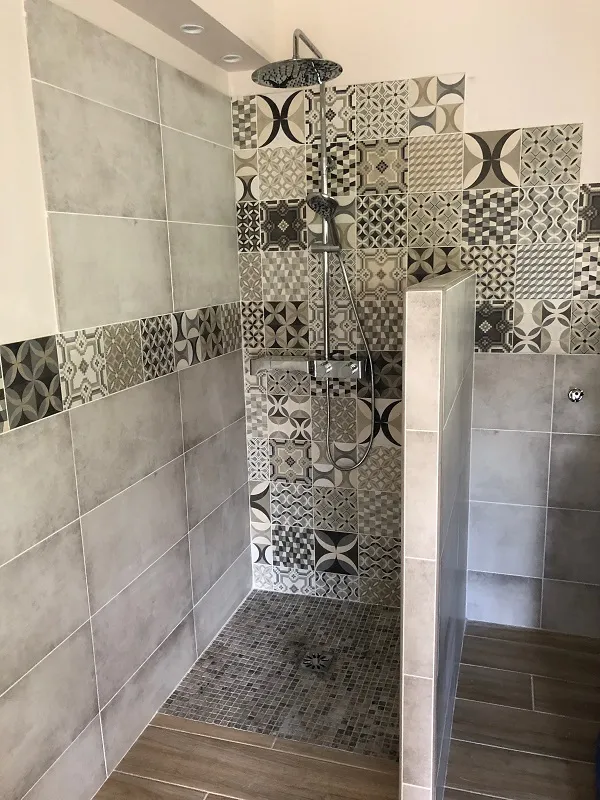

Située au carrefour de la Durance et du plateau de Valensole, Oraison est l'une des communes où nous intervenons le plus souvent. Depuis 2015, Anthony Borey et son équipe y réalisent des chantiers variés : salles de bain, terrasses, sols de séjour, allées en pavés autobloquants. La proximité avec Manosque (15 minutes par la D4) nous permet d'être réactifs et disponibles pour les habitants d'Oraison.
Chaque projet commence par une visite gratuite sur place. Anthony évalue le support existant, prend les mesures et discute avec vous des matériaux et du rendu souhaité. Le devis est remis sous quelques jours, détaillé poste par poste.
Nos services à Oraison
Nous proposons à Oraison l'ensemble de nos prestations :
- Chape liquide : coulage au camion-pompe, chape anhydrite pour plancher chauffant ou chape ciment pour rénovation. Planéité parfaite sur toute la surface.
- Carrelage intérieur et extérieur : pose de grès cérame, carreaux ciment, grands formats, mosaïque. Terrasses, séjours, cuisines, salles de bain.
- Parquet : pose collée ou flottante, parquet massif ou contrecollé, stratifié.
- Rénovation de salle de bain : dépose complète, reprise d'étanchéité, carrelage sol et faïence murale, profilés de finition.
- Pavés autobloquants : allées, cours, entrées de garage. Pose sur lit de sable compacté avec bordures de maintien.
Réalisations à Oraison
Parmi nos chantiers récents à Oraison, une rénovation complète de salle de bain avec du carrelage 30x60 au sol et aux murs, associé à des carreaux ciment 20x20 en frise décorative. Les profilés de finition en inox apportent une touche nette aux angles et aux jonctions. Le résultat est une salle de bain moderne et facile d'entretien.

Nous avons également posé des pavés autobloquants anthracite pour une allée d'accès à Oraison. Ce matériau robuste supporte le passage de véhicules et ne nécessite quasiment aucun entretien. Le calepinage en chevrons donne un aspect structuré et élégant.

Retrouvez d'autres exemples sur notre page réalisations.
Villes voisines couvertes depuis Oraison
En plus d'Oraison, nous intervenons dans les communes voisines : Valensole, Puimichel, Entrevennes, Les Mées et Brunet. Ces communes font partie de notre zone habituelle. Aucun frais de déplacement supplémentaire.
Questions fréquentes
Combien de temps faut-il pour rénover une salle de bain à Oraison ?
Une rénovation complète de salle de bain (dépose, étanchéité, carrelage sol et murs, finitions) prend entre 2 et 3 semaines. Le délai exact dépend de la taille de la pièce et des travaux annexes (plomberie, électricité). Nous établissons un planning précis dès la validation du devis.
Posez-vous des pavés autobloquants à Oraison ?
Oui. Nous réalisons la pose de pavés autobloquants pour allées, cours et terrasses à Oraison et alentours. Préparation du sol, lit de sable, pose et joints : nous prenons en charge l'ensemble du chantier.
Y a-t-il des frais de déplacement pour Oraison ?
Non. Oraison se trouve à 15 minutes de notre atelier de Manosque, dans notre zone d'intervention principale. Le déplacement pour le devis est gratuit et aucun supplément n'est facturé. Appelez le 06 52 25 12 26 pour prendre rendez-vous.